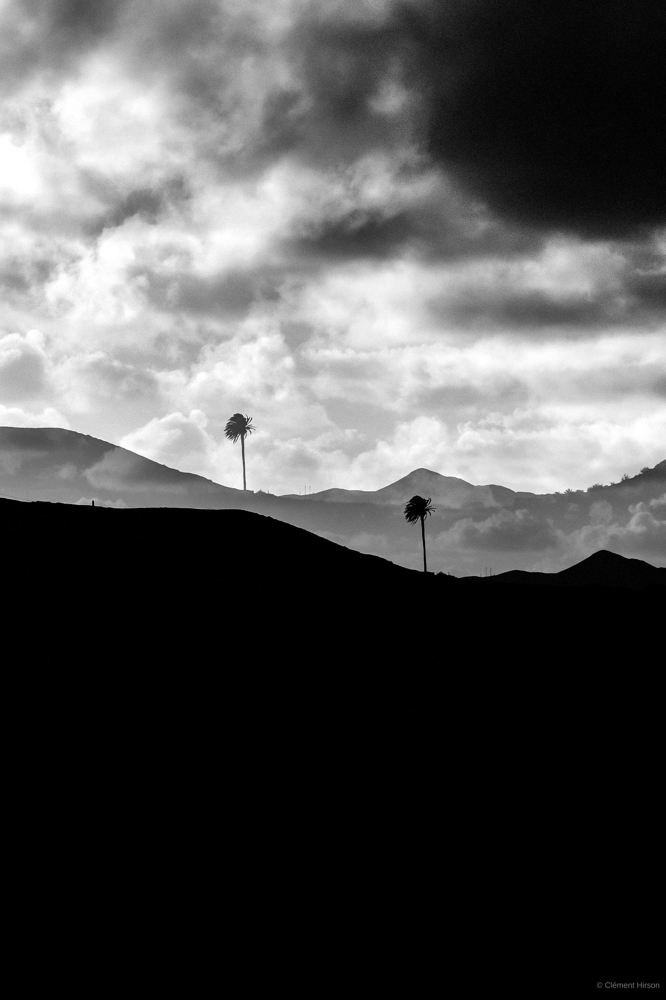
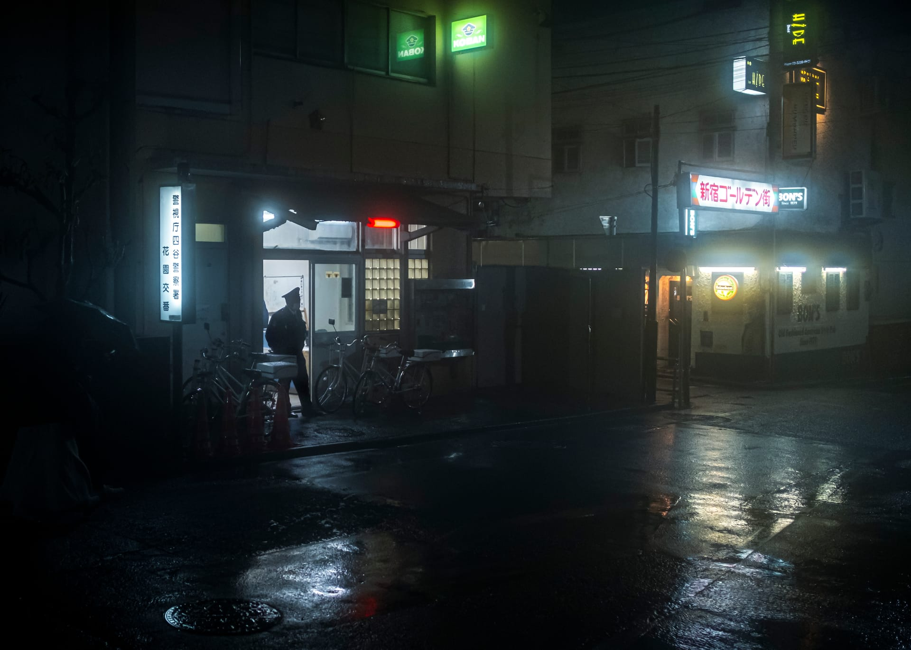
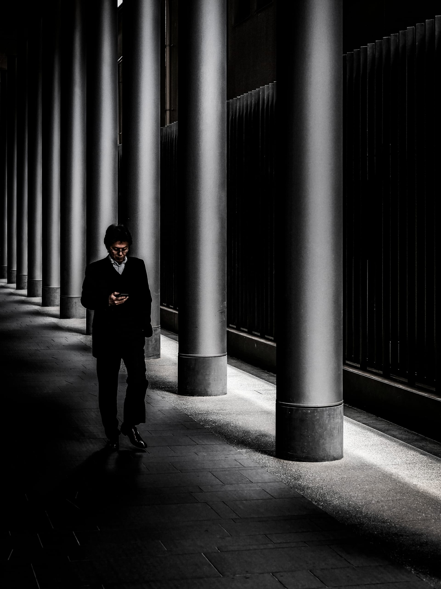
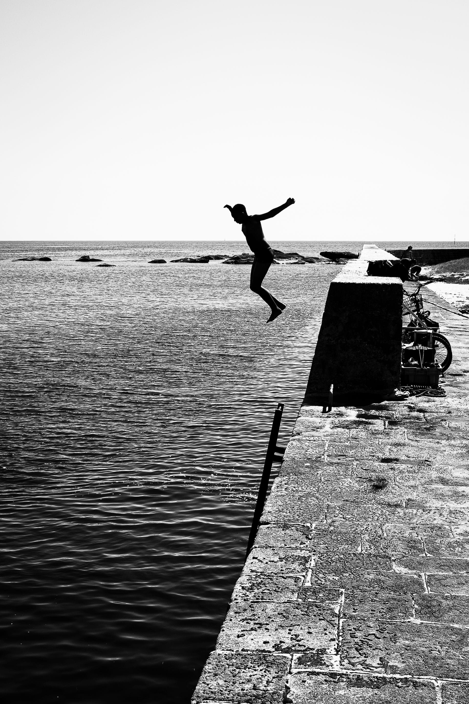

Seven years. Three geographies.
One continuous question about light and waiting.
Interlude is the long-term work of a documentary photographer based in Paris. Japan, Lanzarote, Elsewhere — images assembled without caption or hierarchy, as close as possible to lived time. The series have been shown in Arles, Tokyo and Lisbon.
Each series is a notebook — images assembled without caption or hierarchy, as close as possible to lived time.

Clément Hirson is a Paris-based amateur photographer. The images seek suspended moments — between seasons, between lights, between words. Japan, Lanzarote, Elsewhere — three bodies of work assembled without hierarchy, as close as possible to lived time.
For print sales or any inquiry, write directly.